שתי משפחות סימן · וקטור טהור (הכיתוב הומר לנתיבים — אפס תלות בפונטים) · פלטת ה-Sky של האתר · נגיש (title+desc) · מוכן לכל גודל
אבולוציה נאמנה של הלוגו המקורי: מניפת חמישה סרטי גל מחודדים (עבה בבסיס, דק בקצה) שנבנו מתמטית — כל סרט הוא נתיב סגור עם שתי שפות bezier, לא stroke אחיד. גרדיאנט זורם לאורך התנועה.
crest-horizontal-dark.svg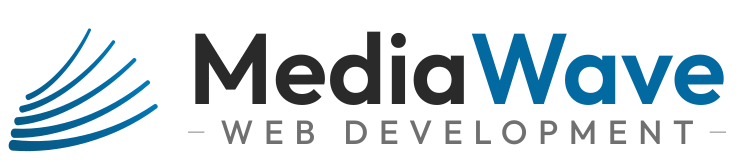
crest-horizontal-light.svg
crest-horizontal-mono-white.svg — לצילומים/וידאו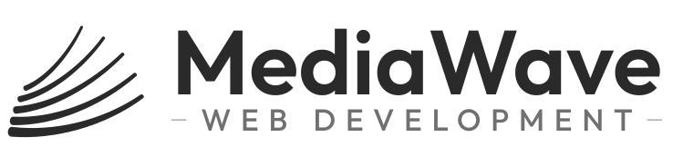
crest-horizontal-mono-ink-light.svg — הדפסה בצבע אחד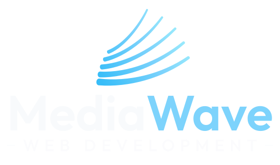
crest-stacked-dark.svg — פרופיל/ריבוע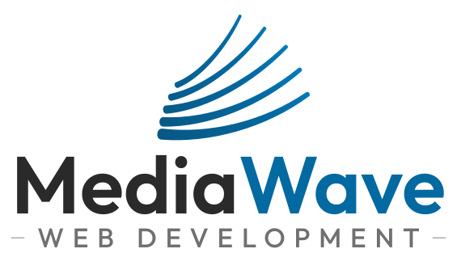
crest-stacked-light.svg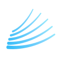
crest-mark-dark.svg — הסימן לבדו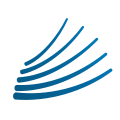
crest-mark-light.svgה-favicon הוא גרסה ייעודית: שלושה סרטים בלבד, בעובי כפול — כדי ששום דבר לא ייעלם ב-16px.
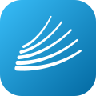
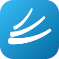
גל שובר: שלושה־ארבעה סרטים מתעגלים קדימה עם פסגה לבנה ושובלי תאוצה — יותר "תנועה", פחות "מניפה". אותה שפה, אנרגיה אחרת.
swell-horizontal-dark.svg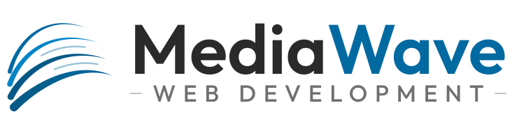
swell-horizontal-light.svg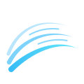
swell-mark-dark.svg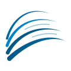
swell-mark-light.svgאם רוצים ריברנד אמיתי: שלושה סרטים נוזליים שמתפתלים סביב מרכז משותף לכדי גל שובר. הקריאוּת הכי טובה בגדלים קטנים מבין השלושה — אבל זו כבר סטייה מה-DNA של המניפה המקורית. סימן בלבד בשלב זה.
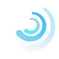
curl-mark-dark.svg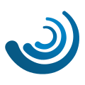
curl-mark-light.svgnpx svgexport in.svg out.png 2x או ב-Figma/Inkscape. ל-favicon.ico: לייצא 16/32/48 ולארוז.